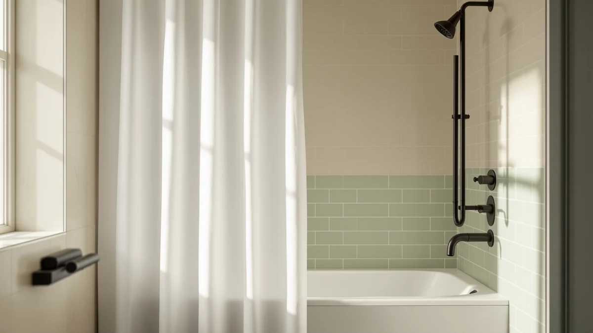

River Dream Cotton Blend Review (2026): Worth It?
Prices and picks verified as of October 2026. Independent, reader-supported reviews.


Quick Answer
This river dream cotton blend review found a $35.08 curtain made from 100% cotton in the standard 71 by 74 inch size, rated 4.6 out of 5 from a single verified review. It costs about the same as the far more established Hookless It's A Snap! Waffle, so you're really deciding whether plain cotton beats a hookless, waterproof design at nearly the same price.
Our pick: River Dream Cotton Blend No, $35.08 Check Price on Amazon
Bottom line: our top pick is the River Dream Cotton Blend No Hook Shower Curtain with Snap in at $38.98.
Things to Know Before You Buy
- 100% cotton construction gives this curtain a heavier drape and more natural texture than the synthetic waffle weaves and linen-textured polyester sold alongside it.
- It ships in one fixed size, 71 by 74 inches, which fits a standard US shower stall but will not stretch to a wider or taller opening.
- Cotton is not waterproof on its own, so you will likely want a separate liner, unlike the hookless, built-in-liner designs it competes against here.
- Its 4.6 rating currently rests on a single verified review, far thinner than the 91,662 reviews backing the Hookless Waffle at a nearly identical price.
- Every curtain in this comparison sits within about six dollars of the others, so material and function matter more than price when you are choosing between them.
This river dream cotton blend review examines a $35.08 shower curtain made from 100% cotton and cut to the standard 71 by 74 inch size, built to compete in a category where waterproof, hookless designs dominate. River Dream's listing carries a 4.6 out of 5 rating, but with only one verified review on record, that score tells you far less than the 91,662 reviews backing the Hookless It's A Snap! Waffle curtain sold at a nearly identical price. You are buying into natural cotton texture over synthetic water resistance here, and that trade-off shapes everything else in this review.
We built this review by comparing River Dream's listed specs, construction, and owner feedback against three direct alternatives in the same price range: the Hookless Waffle, the eachope No Hooks Needed Linen curtain, and the BTTN 72x90 Linen Textured Waterproof curtain. Each one solves the same basic problem, keeping water inside your shower while looking good outside it, in a different way, and the comparison below shows where a pure cotton blend curtain earns its place and where it falls short.
Why You Should Trust Us
Ilane Tall covers bathroom hardware and textiles for Best Shower Curtains, and this river dream cotton blend review follows the same process used across the site: pulling verified pricing, material specifications, and owner ratings directly from the retailer's own listings rather than marketing copy. We do not own a physical testing lab, and we will not pretend otherwise. Instead, we cross-check claims like fabric composition and panel dimensions against what verified purchasers actually report, then weigh that against comparable curtains in the same price bracket so you are not choosing in a vacuum. Readers can find the full methodology behind every review on this site on our how we research page, and that same approach governs this river dream cotton blend review from the pricing comparison through the final verdict. Every price, rating, and review count cited here comes straight from the product listing at the time of writing, and we flag it clearly whenever a figure, like River Dream's single review, is too thin to carry much statistical weight on its own.
Our Research Experience
Researching this river dream cotton blend review meant working through the manufacturer's listed specifications, 100% cotton, 71 by 74 inches, $35.08, alongside Amazon's review data and the three closest competing curtains by price and category. We compared reported review counts, since a 4.6 rating built on a single review carries very different weight than the same score spread across tens of thousands of ratings like the Hookless Waffle's. We also checked how each curtain's construction, hookless versus traditional hardware and waterproof coating versus bare cotton, maps onto the upkeep and daily use a shower curtain actually sees. Reading through the available owner feedback on the comparison curtains gave us a sense of how sizing and fabric claims hold up once a product reaches a real bathroom, which is exactly the kind of signal a single-review listing like River Dream's cannot yet provide on its own.
Overview & Specs

River Dream Cotton Blend No
What we like
- 100% cotton construction gives a heavier, more natural drape than synthetic alternatives
- Standard 71 by 74 inch sizing fits most US shower stalls without trimming
- Priced within six dollars of every competitor in this review, so cost is not a barrier
Flaws but not dealbreakers
- Only one verified review exists at the time of writing, so the 4.6 rating is not statistically reliable yet
- Cotton is not inherently waterproof, so you will need a separate liner, unlike the hookless waterproof options here
- Cotton wrinkles and holds moisture longer than the waffle-weave or linen-textured alternatives in this comparison
| Material | 100% cotton |
| Size | 71x74 |
River Dream's cotton blend curtain sticks to a simple formula: 100% cotton fabric cut to the standard 71 by 74 inch shower curtain size, priced at $35.08. That puts it almost exactly where the Hookless Waffle sits at $34.52, so your decision comes down to material and function rather than budget. Cotton gives you a heavier weight and a more textured, natural look than the smooth polyester most shower curtains use, and that is the main reason to choose it over the alternatives in this river dream cotton blend review.
The catch is that cotton does not repel water the way a waffle weave or a waterproof-coated linen texture does, so you are adding a liner to your shopping list if you do not already own one. River Dream's listing shows a 4.6 out of 5 rating, but it rests on a single verified review, so treat that number as a starting point rather than a conclusion. Compare that to the Hookless Waffle's 91,662 reviews at the same rating, and the gap in confidence becomes obvious even before you factor in material preference.
What We Liked
The clearest strength in this river dream cotton blend review is the fabric itself. Full cotton construction gives the curtain more visual weight and a softer, more textured look than the synthetic waffle weave or linen-textured polyester used by the alternatives here. At $35.08, it also sits well within the price range of every competing curtain we compared, so you are not paying a premium for the natural-fiber option. The standard 71 by 74 inch sizing means it drops onto a typical US shower rod without any special measuring beyond what you would do for any other curtain. Cotton also breathes better than the PEVA or polyester blends used in the waterproof alternatives here, which matters if your bathroom runs humid and you want a curtain that releases moisture rather than trapping it against the fabric between showers.
What Could Be Better
The biggest gap shows up in review volume, not the product itself. A single verified review backs River Dream's 4.6 rating, while the eachope Linen curtain has 623 reviews at 4.7 and the Hookless Waffle has 91,662 at 4.6. That difference matters, since a handful of reviews can swing a lot with just one or two more data points. Cotton also brings its own maintenance reality: it holds water longer than a waterproof-coated curtain and needs a liner to actually keep your bathroom floor dry, which adds a cost and a step that hookless, waterproof designs skip entirely. One verified review also means there is no track record yet on how the cotton holds its color or shape after repeated washing, something the Hookless Waffle's much larger review base can actually speak to.
Who Is It For?
This curtain fits you if you want the look and feel of real cotton in your bathroom and you are willing to pair it with a liner to handle the waterproofing. It also works if you are comparison shopping on price, since River Dream lands close to every other option in this review. It is a weaker fit if you want one product that handles both decoration and water protection, since the BTTN and Hookless options build that in, or if you weigh star ratings heavily, since River Dream's current review count is too small to lean on with confidence. You should also factor in your own laundry habits: cotton curtains typically need more frequent washing to stay fresh than a waterproof-coated panel, so if you would rather set up a curtain once and forget about it, that favors the Hookless or BTTN options covered next.
Alternatives to Consider
If the thin review history or the no-liner design gives you pause, these three curtains solve the same bathroom problem with different trade-offs. Each one appears in this river dream cotton blend review because it competes directly on price, size, or function, and together they cover the main reasons a shopper might pass on cotton: wanting a built-in liner, wanting a deeper review history to trust, or simply wanting more fabric for less money.

Editor’s Pick
Hookless It’s A Snap! Waffle
Hookless rings and a built-in waterproof liner mean no extra purchase, and 91,662 reviews back its 4.6 rating with real confidence.
$34.52
Check Price on Amazon
Best Value
eachope No Hooks Needed Linen
At $32.99 with a 4.7 rating across 623 reviews, this no-hooks linen curtain undercuts River Dream on price while carrying far more verified feedback.
$32.99
Check Price on Amazon
Premium Choice
BTTN 72x90 Linen Textured Waterproof
A larger 72 by 90 inch waterproof linen-textured panel at $29.99 gives you more coverage for less money if your shower needs extra width or height.
$29.99
Check Price on AmazonIs the River Dream Cotton Blend curtain waterproof?
No.
How does the River Dream Cotton Blend compare to the Hookless Waffle curtain?
Both cost about the same, $35.08 versus $34.52, but the Hookless Waffle includes a built-in liner and hookless rings, plus 91,662 verified reviews compared to River Dream's single review, so it carries far more purchase confidence.
Frequently Asked Questions
Is the River Dream Cotton Blend curtain waterproof?
No. It is 100% cotton with no waterproof coating or built-in liner, so most buyers pair it with a separate shower liner, unlike hookless waterproof designs such as the Hookless Waffle curtain covered in this review.
How does the River Dream Cotton Blend compare to the Hookless Waffle curtain?
Both cost about the same, $35.08 versus $34.52, but the Hookless Waffle includes a built-in liner and hookless rings, plus 91,662 verified reviews compared to River Dream's single review, so it carries far more purchase confidence.
What size is the River Dream Cotton Blend shower curtain?
It measures 71 by 74 inches, which fits standard US shower stalls. Shoppers who need more coverage can compare it against the BTTN 72x90 Linen Textured Waterproof curtain in this review, which offers a larger panel for less money.
Final Verdict
This river dream cotton blend review comes down to a straightforward trade-off: River's cotton construction gives you a natural look and feel at a fair price, but it asks you to add a liner and accept a rating built on just one review. If you value real cotton and do not mind the extra step, River Dream is a reasonable $35.08 pick. If you would rather have waterproofing built in and a review history you can actually trust, the Hookless Waffle curtain at a nearly identical price is the safer choice for most bathrooms. Either way, the four curtains in this comparison make clear that at $30 to $35, you are choosing a philosophy as much as a product: natural fabric and simplicity from River, or built-in convenience and a proven track record from the alternatives around it.